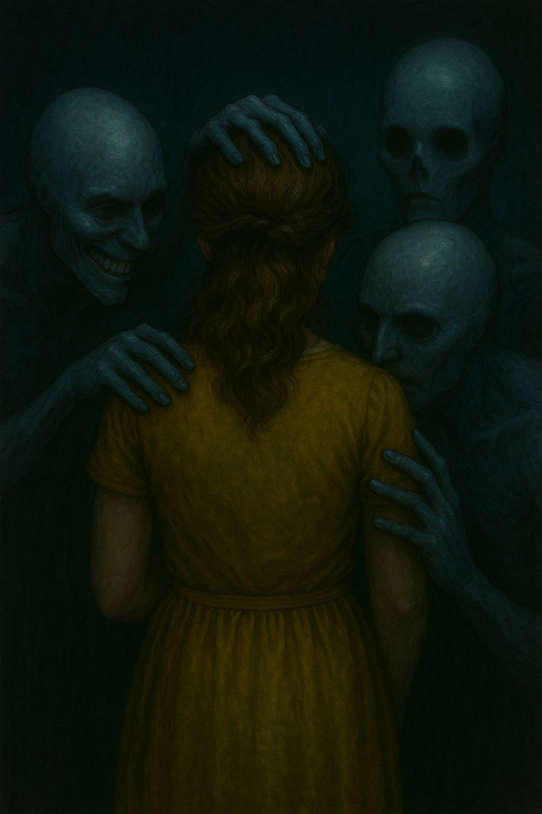

- Pois bem, deveria se esforçar um pouco mais para se lembrar...
Você me procurou por muitos anos da sua vida, e agora estou bem aqui. Óbvio que não ando só — não poderia criar essa distopia em que vocês, pequeninos, vivem, sempre buscando uma razão para tudo acontecer. -Disse ainda com seu sorriso desprezível, e um certo contentamento em seu olhar soturno.
- - Do que diabos você está falando? Onde estamos? - Perguntei, agora com uma coragem que nascera do desespero.
- - Realmente sei que você é mais esperto do que está parecendo ser - disse, em tom irônico. - Não se preocupe com explicações no momento. No decorrer dos dias, compreenderá o que sempre buscou.
Então abri os olhos, tomado por um pavor que me prendia à cama.
- - O quê? Isso tudo foi um sonho? - Ainda tremia, suando frio.
Minha mulher dormindo ao meu lado, e o relógio marcava seis da manhã.
- - Puta merda! Exclamei ao perceber que já estava atrasado para o trabalho.
Enquanto dirigia em direção ao serviço, me perguntava se tudo aquilo realmente havia acontecido, o que era um sonho? O que era real? Maldição, tudo parecia real!
De qualquer maneira eu me sentia diferente, algo havia mudado em mim, não sabia o que... algo havia mudado.
Quando entrei no escritório, a cobra fedorenta já se encontrava lá, comendo chocolate — aquele chocolate meio derretido com um aspecto asqueroso que, afinal, combinava muito com a sua cara. Sorri para ela, e ela, por sua vez, lançou seu olhar de raiva. Dei um leve sorriso sarcástico e me sentei, quando, por alguma razão, comecei a sentir o ar pesado, denso... e me lembrei do sonho que tive (realmente sonhei?).
Comecei a me sentir muito incomodado. Era como se algo me estimulasse a olhar novamente para a serpente. Então eu o fiz.
Seus olhos estavam diferentes. Podia ver uma tristeza destruidora vindo deles, hematomas nos braços e no rosto. Fiquei perplexo — não conseguia parar de olhar, tentando entender o que estava vendo. Ela levantou o rosto, e eu vi seus olhos: negros. Completamente negros e vazios.
- - O que está olhando, idiota? Perdeu o cu na minha cara?!
- - O quê?
Então eu me dei conta de que todos no escritório estavam me olhando. Sabe-se lá há quanto tempo eu estava parado, encarando a criatura!
- - O que está querendo? Logo cedo, me encarando como se eu fosse a tua mãe. Não vejo a hora que você saia daqui, amigo.
Disse ela com um ar de desprezo. Me virei novamente... e tudo estava normal outra vez. O que estava acontecendo, afinal?
O resto do dia passou. Nada de diferente. Mas minha cabeça girava, tentando entender tudo aquilo.
...
Finalmente, era hora de voltar para casa. Parecia que eu havia saído há dias! Não sei explicar, mas o tempo não estava passando como deveria. Era como se tudo à minha volta estivesse em seu lugar, mas meu relógio biológico estava com um delay violento.
Voltei para casa, e, por incrível que pareça, minha mulher não estava com raiva, mesmo com os inconvenientes na igreja. Isso me reforçou a ideia de que, se de fato estivemos lá algum dia.
- - Olá, querido, como foi seu dia? (Ela me perguntou com seu típico sorriso estampado no rosto.)
- - Hum... o de sempre, nada novo, nada...
- - Me parece pensativo, tem certeza de que não quer dizer nada?
- - Não, nada, tudo normal, querida. (Será que era um jogo? Será que ela estava tentando alguma indireta?)
- - O que iremos comer?
- - Poxa, querido, fiz tantas coisas hoje e acabei deixando o jantar para depois. Vamos pedir uma pizza, tudo bem?
- - Como resistir ao seu olhar e essa voz de mimo? (PIZZA!)
Sentei em uma cadeira na cozinha enquanto folheava uma agenda, procurando o número de alguma pizzaria. Ela me observava, com um sorriso de satisfação. Eu retribuí o sorriso e abaixei a cabeça.
- - Aqui está, essa pizzaria é muito boa!
Peguei o telefone, voltei a me sentar enquanto aguardava na linha. Estava ocupado.
- - Muitos pedidos hoje...
- - Está ocupado? Ela indagou.
- - Sim.
Respondi enquanto discava novamente.
Ela então caminhou para a sala, seguiu pelo corredor da cozinha e ligou a televisão. Ainda de pé, escolhia um canal enquanto eu a observava. Estava ali, de costas para mim, e eu pensava no quanto me sentia confortável perto dela. Sabe, eu estava sempre sério, de saco cheio, mas ela vivia com aquele sorriso em seu rosto rosado, como uma boneca. Havia sempre tranquilidade em sua voz, e aquilo me parecia um ponto de equilíbrio...
Me perguntava de onde vinha aquela calma.
- - Está realmente difícil conseguir uma pizza hoje! Falei meio cansado.
Ela apenas se virou e me lançou um sorriso sereno.
Quando terminei de discar pela quinta ou sexta vez, senti novamente o ar mudar, algo ficar diferente. No entanto, era algo menos denso, como se deitar em um rio calmo, mas extremamente frio. Olhei para ela e deixei a agenda cair. Ela estava cercada por três humanoides, seres com uma aparência disforme.
Enquanto um deles mantinha as mãos sobre seus ombros, o segundo fazia o mesmo sobre sua cabeça, como se ambos estivessem retirando ou depositando algum tipo de energia vital. O terceiro sorria, um sorriso grotesco, indefinível. Não era ameaçador, mas era um sorriso cruel, um sorriso assassino. No entanto, o resto de seu rosto — "se é que poderia ser chamado assim" — não apresentava nenhuma reação, como uma máscara sobre o rosto. A boca, porém, estava descoberta e fazia um movimento, como se sussurrasse coisas em seu ouvido. Nos intervalos, parecia esboçar um sorriso de satisfação.
- - Alô, alô?
Percebi que já haviam atendido o telefone e, com um pouco de vergonha pela demora, fiz o pedido e me desculpei.
Voltei a olhá-la, e, dessa vez, estava novamente sozinha. "Devo contar para ela? Será que realmente estou vendo essas coisas?" Estava começando a sentir uma leve dor de cabeça. Comemos. Eu, no entanto, comi quase nada. Ela me observava com um olhar preocupado, mas se manteve em silêncio.